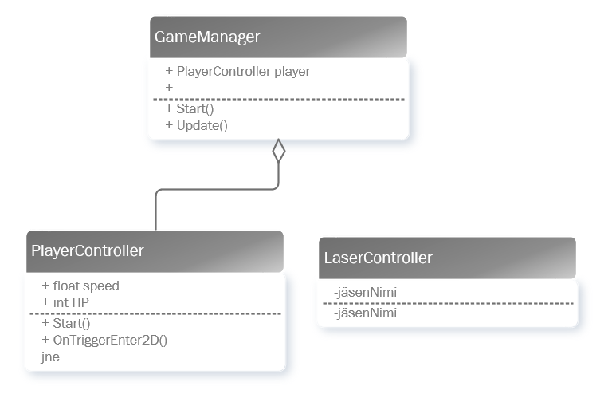
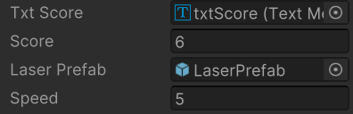

Avaruuden sankari
Tehtävän kuvaus
Tarkoitus on tehdä pieni Space Invaders-tyyppinen ammuskelupeli. Pelaaja ohjaa alusta joko oikealta vasemmalle tai ylhäältä alas. Pelaaja kerää pisteitä ampumalla vastustajia, kun pelaaja kuolee näytetään lopetusruutu. Lopetusikkunalla kerrotaan pelaajan pisteet sekä kaikkien aikojen paras tulos. Peli voi myös perustua painovoimaan.
- GameController
- Kokeillaan tässä pelissä samaa ideaa kuin Ping Pong-sovelluksessa. On yksi pääluokka jonka sisällä luodaan alus ja vastustajat.
- Alus ja liikkuminen
- Tehdään pelaajan alus joka voi liikkua ylös ja alas (tai oikealle ja vasemmalle)
- Ampuminen
- Katso miten Ruby's 2D RPG:ssä tehtiin ampuminen. Tarkoitus on, että aluksella pystyisi ampumaan kohti vihollisia.
- Viholliset
- Viholliset ilmestyvät satunnaisesti ruudun toiseen reunaan ja liikkuvat kohti pelaajaa.
- Liikkuva tausta
- Tarkoitus on kokeilla miten saadaan taustalle esimerkiksi tähtikartta joka liikkuu pelin kulun ajan.
- Youtube: Liikkuva tausta
1. Suunnittelu
Tässä harjoituksessa on tehtävänä ensin tehdä kevyt suunnitelma. Lisää itsellesi VSCodessa uusi kansio ja sinne readme.md.
- Markdown-tiedostona kevyt suunnitelma pelistä. Tähän kootaan suunnittelun aikana tehtävä sisältö.
- Yleiskuvaus: kerro lyhyesti millainen sinun pelisi olisi. Mitä olet lähdössä tekemään.
- Yksinkertainen mockup pelistä. Sinun ei tarvitse käyttää pirtoohjelmaa vaan tee Unityssa ulkoasu aloitus-, lopetus- ja pelinäkymästä. Mieti mitä mahdollisia valmiita Asset Storen assetteja hyödyntäisit.
- Luokkakaavio pelin luokista tehdään vasta toteutuksen jälkeen. Tässä harjoituksessa palautetaan mieleen miten luokkakaavio piirretään. Käytetään Vision kaaviota "Staattinen UML-rakenne".
- Ensin luokat kaaviolle.
- Luokkien muuttujat (attribuutit)
- Luokkien toiminnot (metodit)
- Luokkien väliset yhteydet. Yhteyksissä kannattaa käyttää Koostetta (Composition) tai Kytkentää (Assosiation), yhteys on silloin kun toinen luokka, esimerkiksi GameManager, käyttää toista luokkaa. (Lisätietoa esimerkiksi Class Diagram Relationships).

- Esittele suunnitelma ennen toteuttamisen aloittamista!
2. Toteutus
Liikkuminen
Kun olet tehnyt kevyen suunnitelman niin kannattaa aloittaa pelaajan koodaamisesta
- hahmo (itse piirretty, asset -paketista tai googlen kuvahausta)
- skripti hahmolle
- miten hahmo liikkuisi esim. vasemmalle - oikealle
Hahmon liikkuessa voi lähteä miettimään ampumista tai vastustajia
Ammus
Ammus kannattaa toteuttaa samaan tapaan kuin Ruby's 2D RPG:ssä. Ammus tarvitsee oman skriptin, liitä tämä ammuksen prefabille. Lisää ammukselle RigidBody2D, älä laita Kinematic vaan Dynamic ja Mass arvolle 0.
- Aseta ammukselle private-attribuutti rigidbody:
Rigidbody2D rigidbody2d;
- RigidBody asetetaan Awake()-metodissa:
void Awake() { rigidbody2d = GetComponent<Rigidbody2D>(); } - Lisätään ammukselle metodi joka käynnistää liikkeen
public void Shoot(Vector2 direction, float force) { rigidbody2d.AddForce(direction * force); } - Osuminen tarkistetaan OnTriggerEnter2D-metodissa:
void OnTriggerEnter2D(Collider2D other) { if (other.tag == "Enemy") { Debug.Log("Osuttiin " + other.gameObject); Destroy(gameObject); } } - Pelaaja suorittaa ampumisen, pelaaja-luokassa tehdään uuden ammuksen luonti.
- Lisää aluksi uusi GameObject:
public GameObject laserPrefab; Rigidbody2D rb;
Rigidbody2D määritellään samaan tapaan kuin ammuksella Awake() tai Start()-metodissa. Raahaa laserPrefab:n kohdalle editorissa ammuksesi Prefabs-kansiosta.
-
void Shoot() { GameObject laser = Instantiate(laserPrefab, rb.position + Vector2.up * 1.5f, Quaternion.identity); LaserController projectile = laser.GetComponent<LaserController>(); projectile.Shoot(new Vector2(0,1), 0.2f); } - Kun painetaan välilyöntiä niin ammutaan, lisää Update()-metodille:
if (Input.GetKeyDown(KeyCode.Space)) { Shoot(); }
- Lisää aluksi uusi GameObject:
Vastustajien luominen
Vastustajia voi tehdä monella tapaa, kokeile hakea verkosta erilaisia ratkaisuja ja mieti mikä voisi toimia sinun pelissäsi.
Yksi yksinkertainen malli: EnemySpawnScript.cs
Tekstin päivittäminen
- Ammuksen pitäisi osata kertoa pelaajalle koska pisteitä lisätään. Lisää aluksi tuttuun tapaan skenelle uusi Canvas ja TMP_Text.
- Lisää pelaajalle julkinen TMP_Text-muuttuja, raahaa editorissa TMP_Text-kenttä tämän arvoksi.
using TMPro;
Esittele pelaajan skriptissä muuttujat:public TMP_Text txtScore; public int score;
Raahaa Text-objekti julkisen muuttujan kohdalle Inspector-ikkunassa: 
- Lisää PlayerController-skriptiin julkinen aliohjelma joka kasvattaa pisteitä:
public void AddScore() { this.score += 1; this.txtScore.text = "Score: " + score; } - Ammus osuu vastustajaan ja silloin pisteiden pitäisi kasvaa. Kutsutaan pelaajan skriptin AddScore-funktiota:
GameObject.Find("Player").GetComponent<PlayerController>().AddScore();